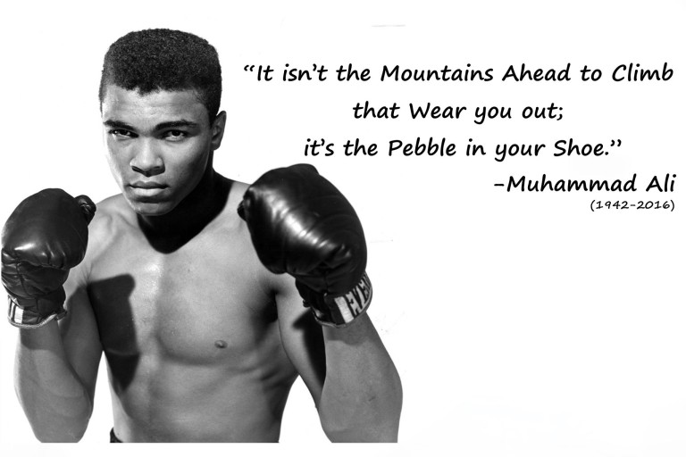

Beginning The Path To Greatness
THE LOUISVILLE LIP
Cassius Clay Sr. gifted his son a new red-and-white Schwinn in 1954, which was promptly stolen. The 12-year-old, 89-pound Cassius Clay vowed “I'm gonna whup whoever stole my bike!” A policeman, Joe Martin, told young Cassius Clay that he better learn how to fight before he challenged anyone. After 6 months of training with Joe Martin, Cassius won his debut match in a three-round decision. Young Cassius Clay dedicated himself to boxing and training with an unmatched fervor. According to Joe Martin, Clay set himself apart by two things: He was “sassy,” and he outworked all the other boys.
GOLDEN GLOVES
Muhammad Ali participated in the light-heavyweight class Golden Gloves tournament for novices in 1956. It took him three years, but finally in 1959, Ali was named Golden Gloves Champion and earned the Amateur Athletic Union's national title in the light-heavyweight division.

ROME OLYMPICS
Shortly after his high school graduation, 18 year-old Cassius Clay began his journey towards greatness at the 1960 Rome Olympics. His expansive personality and larger-than-life spirit earned him the nickname “The Mayor of Olympic Village.” The future 3-time Heavyweight World Champion nearly missed the trip to Rome due to his fear of airplane travel; he insisted on bringing a parachute on the plane with him. On September 5, 1960, “The Greatest” proved his dominance in the Light Heavyweight Boxing Division by beating Zigzy Pietrzykowski of Poland, capturing the Olympic Gold Medal. Sports Illustrated praised Clay's “supreme confidence” and “intricate dance steps.”

“MY NAME IS MUHAMMAD ALI”
While training for his title bout against the fearsome heavyweight champion, Sonny Liston, Cassius Clay met Malcolm X. Malcolm became young Clay's mentor and brought him into the Nation of Islam (NOI). Despite the 7-1 odds, Clay defeated Sonny Liston in Miami and became Heavyweight Champion of the world in 1964. Shortly after, he announced to the world that he was a member of the NOI and that his name was now Muhammad Ali.
ALI: RETIREMENT & RETURN
Muhammad Ali was stripped of his boxing titles and faced a prison sentence for refusing the Vietnam War draft. During his 3 ½ year suspension, he made a living speaking at colleges. In 1970, as public opinion shifted, Ali made a comeback by fighting Jerry Quarry and Oscar Bonavena. In 1971, he fought Joe Frazier in the "Fight of the Century" but lost. Months later, however, he won one of the biggest fights of his life - the Supreme Court overturned his conviction, allowing him to resume his boxing career.

BATTLE WITH PARKINSON'S
In 1984, Muhammad Ali publicly announced that he had Parkinson's disease, a degenerative neurological condition. Following his diagnosis, he created and raised funds for the Muhammad Ali Parkinson's Center in Phoenix, Arizona. Boxing legend died Friday at age 74 after a lengthy battle against Parkinson's disease.